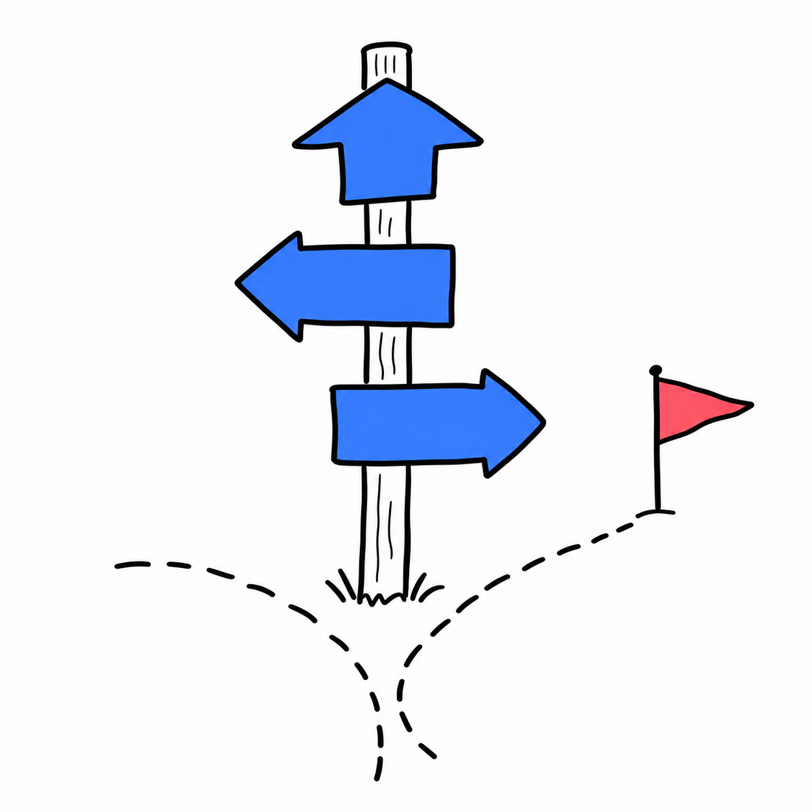

選定フロー — 無料から有料・自作へ折れる分岐
出発点は常に
「無料で試す」
。進む条件を先に決める
条件が複数同時に立ったら、迷わず次へ折れる。無料は"答え"ではなく見極めの道具
START
無料で試す
↓
Q1
用途は1つに決まっているか
→
いいえ
用途を1つ選ぶ（戻る）
↓
はい
Q2
無料で相性が見えたか
→
いいえ
立ち止まる／別用途を試す
↓
はい
Q3
回数上限・精度不足・他部署展開・機密／法令
このいずれかが立つか
→
いいえ
✓
無料を継続
↓
はい
Q4
社内固有の文脈・独自ワークフロー・権限／ログ要件
が加わるか
→
いいえ
有料へ
↓
はい
GOAL
自作・導入へ
どの条件で
どちらへ折れるか

AIを会社のOSにする。